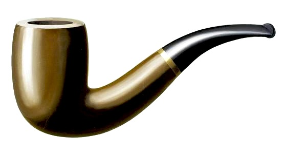

Songpipe
Ceci n'est pas une chanson

Songpipe is an public audio library featuring artists' original song versions, but also unexpected covers and live versions. Expect something different each time.
Loading...

Ceci n'est pas une chanson
Songpipe is an public audio library featuring artists' original song versions, but also unexpected covers and live versions. Expect something different each time.
Loading...
Credits: Product, design, python, content and front-end development: Christopher Ward. With Jim Vallandingham's force D3 code to get started.
Nothing's perfect. Complain about silly/broken song versions or or request a new source.